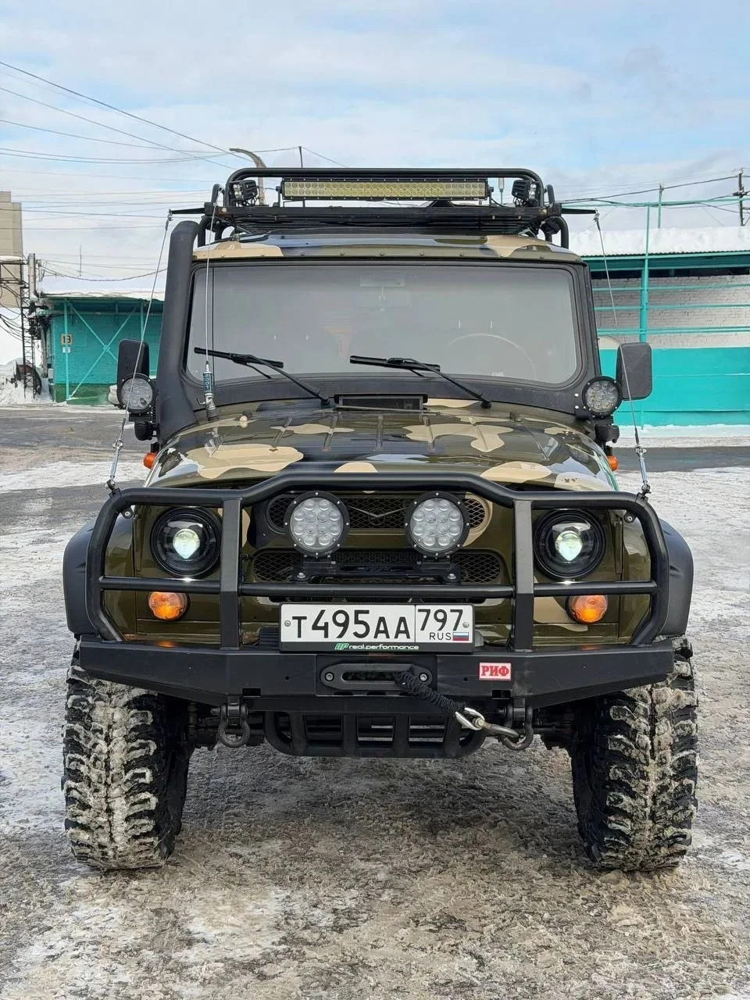
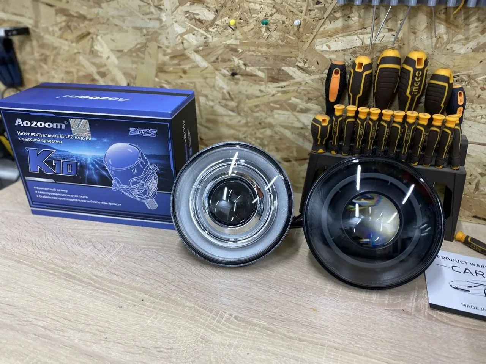
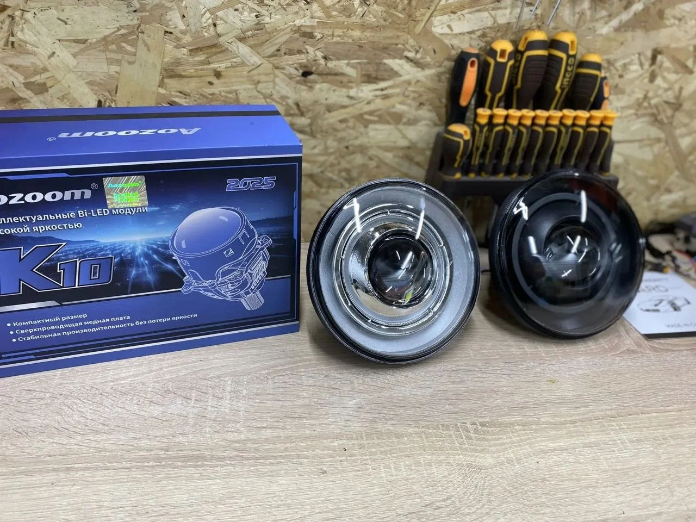
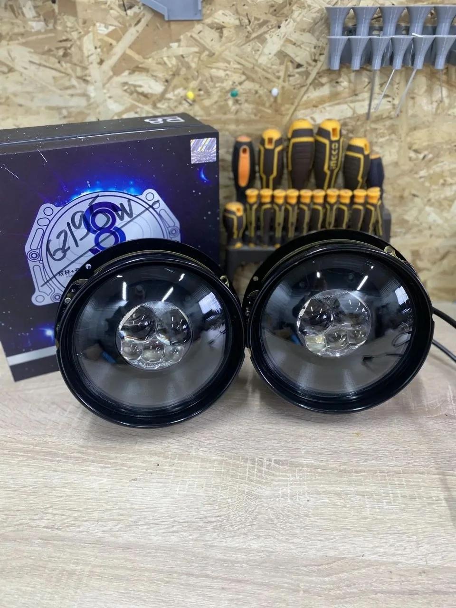
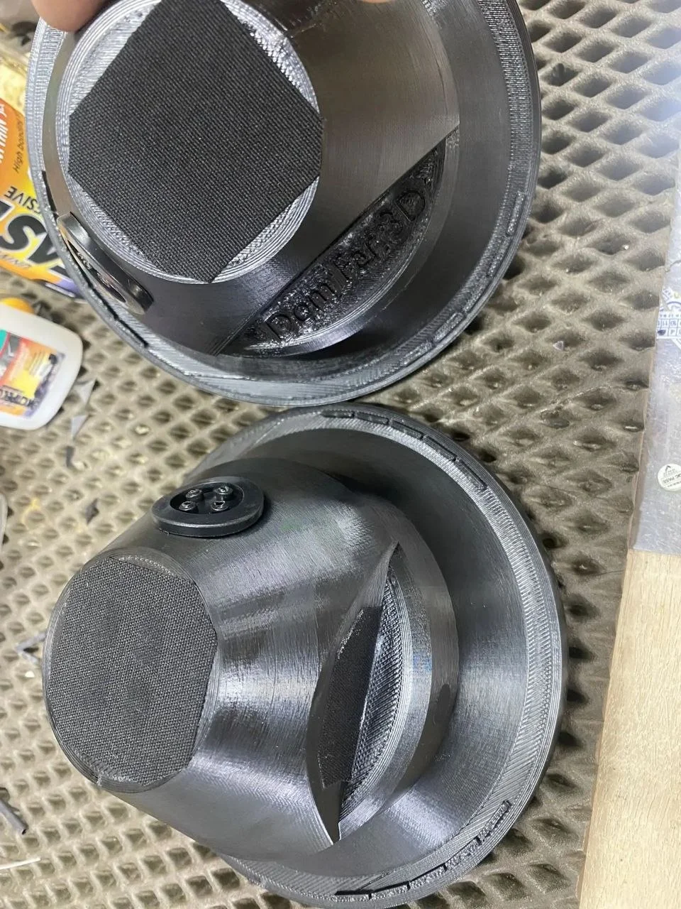
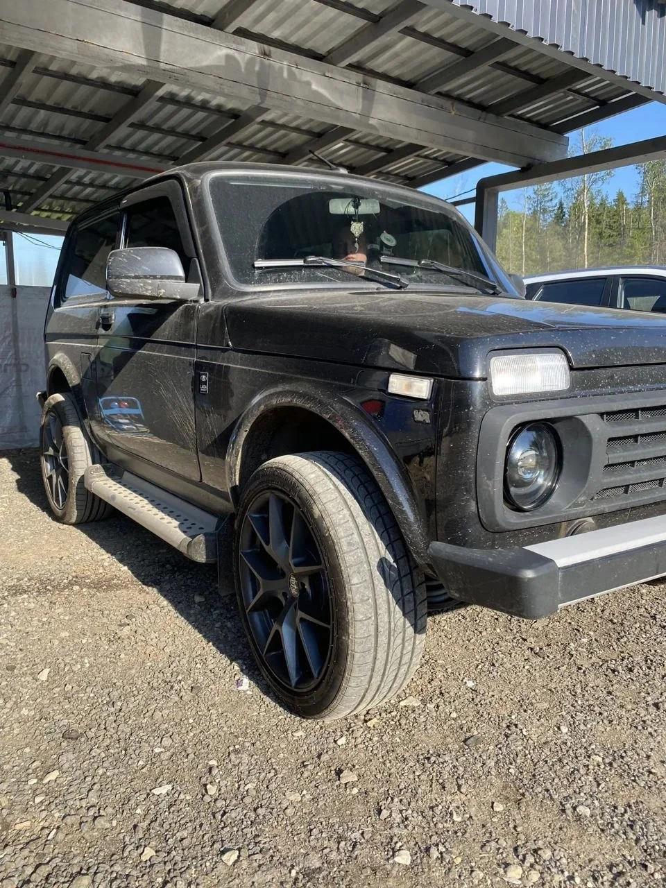

DOMFAR3D СВЕТ В ДВИЖЕНИИ
НИВА. ХАРАКТЕР В СВЕТЕ.
Свет на стене Приостановить
Bi-LED фары Нивы и УАЗа. Обновите свет.
Собираем круглую 7-дюймовую оптику вручную.
Комплекты в наличии и под заказ Совместимость и цена — до оплаты
Установка в Зеленограде Доставка по России

СОБРАНО ВРУЧНУЮ 01 / DOMFAR3D
Ваш будущий комплект. Начнём с подбора под авто. ↗
7″ круглый форм-фактор
Bi-LED ближний и дальний свет
3D корпус своей разработки
Вручную сборка каждого комплекта
01 / ЧТО МОЖНО ЗАКАЗАТЬ
Фары для вашего авто. Нужен только комплект или оптика с установкой?
01 / КОМПЛЕКТ ФАР Заказать оптику Для тех, кто хочет получить готовый комплект и установить его в своём городе.
Bi-LED оптика: ближний и дальний свет. Ручная сборка, корпус собственной разработки. Проверка совместимости по модели и фото фар. 02 / ОПТИКА + УСТАНОВКА Установить фары Для тех, кто хочет заказать оптику и её установку в одной мастерской.
Подберём комплект под ваш автомобиль. Согласуем стоимость фар и установки. Договоримся о времени приезда в мастерскую. 03 / ПОДБОР ПОД ВАШЕ АВТО Проверить, какие Для других автомобилей с круглой оптикой или если вы пока не определились с комплектом.
Пришлите модель, год и фото штатных фар. Уточним посадочное место и подключение. Обсудим исполнение, наличие и изготовление. Не знаете, с чего начать? Достаточно модели и года автомобиля. Фото фар можно приложить в переписке.
02 / ПОДБЕРИТЕ ПОД СВОЮ МОДЕЛЬ
Нива или УАЗ? От классической Нивы до УАЗа.

НИВА / LADA 4×4 Bi-LED фары для Нивы 2121, Legend, Urban. Подберём исполнение под вашу комплектацию, уточним крепления, наличие и стоимость.
Узнать цену для Нивы ↗ 
УАЗ / КРУГЛАЯ ОПТИКА Bi-LED фары для УАЗа 469, Hunter, «Буханка». Обсудим комплект, совместимость и получение: с установкой или доставкой.
Узнать цену для УАЗа ↗ ДРУГАЯ МОДЕЛЬ? Пришлите модель, год и фото штатной фары. Размер 7″ сам по себе не гарантирует совместимость — проверим крепления, глубину и подключение.
Проверить совместимость ↗ 
ОТ КОРПУСА ДО ГОТОВОЙ ФАРЫ 03 / КАК МЫ СОБИРАЕМ ФАРЫ
Знаем, что внутри Корпус проектируем и печатаем сами, затем собираем линзованную оптику. Вы обсуждаете заказ напрямую с мастерской — от подбора до получения.
01 Корпус, который мы создаём сами Проектирование и 3D-печать под конструкцию фары.
02 Bi-LED модули Линзованная оптика для ближнего и дальнего света. Исполнение обсуждаем при подборе.
03 Прямой разговор с мастером Обсудим ваш автомобиль, внешний вид и комплектацию до заказа.
Больше из мастерской в Telegram ↗ 04 / ПОСМОТРИТЕ ПЕРЕД ЗАКАЗОМ
Как выглядят фары Фото из мастерской и примеры установки.

НА АВТОМОБИЛЕ ↗ В ДЕТАЛЯХ ↗ СВЕТОВОЙ ПУЧОК ↗ СВЕТ И ДЕТАЛИ КРУПНЫМ ПЛАНОМ
Посмотрите, что вы выбираете. Видео из мастерской и 5 новых роликов: работа фар на автомобиле и примеры света.
Подобрать под мой автомобиль ↗ 01 Как светят фары ночью Посмотрите на освещённую дорогу в реальной поездке.
02 Как оптика смотрится на УАЗе Оцените внешний вид фар на автомобиле.
03 Что представляет собой готовая фара Рассмотрите линзу, корпус и детали сборки.
Ваш браузер не поддерживает видео. Открыть видео 01 Ваш браузер не поддерживает видео. Открыть видео 02 Ваш браузер не поддерживает видео. Открыть видео 03 Ваш браузер не поддерживает видео. Открыть видео 04 Ваш браузер не поддерживает видео. Открыть видео 05 Фото и видео показывают отдельные примеры. Свет зависит от выбранных модулей, установки, регулировки и условий съёмки.
Хотите такой вариант для своего авто? Напишите модель и год. Уточним совместимость, наличие и стоимость комплекта — с установкой или доставкой.
Получить подбор и цену ↗ 05 / ПОНЯТНЫЙ ПОРЯДОК ЗАКАЗА
Сначала — подбор и цена. 01 / Расскажите об авто Пришлите модель, год выпуска и фото штатных фар. Проверим совместимость и наличие: часть позиций готова к заказу, остальные — под заказ.
02 / Согласуем детали Уточним комплектацию, стоимость и срок. Предоплата — 50%, оставшиеся 50% — по готовности к отправке или выдаче.
03 / Соберём и передадим Установим оптику в Зеленограде или отправим комплект по России: СДЭК, ПЭК, Яндекс Доставка, Ozon.
50% + 50% Предоплата и остаток по готовности
По всей России СДЭК · ПЭК · Яндекс Доставка · Ozon
УЗНАЙТЕ, ЧТО ПОДОЙДЁТ И СКОЛЬКО СТОИТ
Получите подбор Укажите автомобиль и задачу.
Подходящий вариант оптики и комплектацию. Стоимость фар и, при необходимости, установки. Наличие, срок изготовления и доставку. Сейчас вы запрашиваете подбор. Оплату согласуем после уточнения комплектации.
Удобнее голосом? +7 919 046-13-16 ↗ 06 / ОТВЕТЫ ПЕРЕД ПОКУПКОЙ
Что важно знать Сколько стоит комплект? Цена зависит от модулей, корпуса и комплектации. Уточним общую стоимость с учётом установки или доставки. Укажите модель, год и город — обсудим подходящий комплект и стоимость до предоплаты.
Подойдут ли фары на мой автомобиль? Основное направление — круглая 7-дюймовая оптика. Для подбора нужны модель, год и фото посадочного места. Размер, крепления, глубину и подключение уточняем индивидуально.
Можно заказать из другого города? Да, отправляем в любой регион России через СДЭК, ПЭК, Яндекс Доставку и Ozon. Стоимость и условия доставки уточним при заказе.
Есть ли комплекты в наличии? Часть позиций всегда есть в наличии. Другие комплекты доступны под заказ. Напишите модель автомобиля — уточним наличие подходящей оптики и срок изготовления.
Как оплачивается заказ? Предоплата — 50% стоимости заказа. Оставшиеся 50% — по готовности к отправке или выдаче.
Можно установить фары у вас? Да, устанавливаем автомобильную оптику в Зеленограде. Совместимость, стоимость установки и удобное время согласуем заранее.
Какие сроки и условия гарантии? Срок изготовления и условия гарантии согласуем для выбранного комплекта перед оформлением заказа.
Что нужно учесть при установке? До заказа уточните требования к установке и применению выбранной оптики на вашем автомобиле. После установки необходима корректная регулировка света.